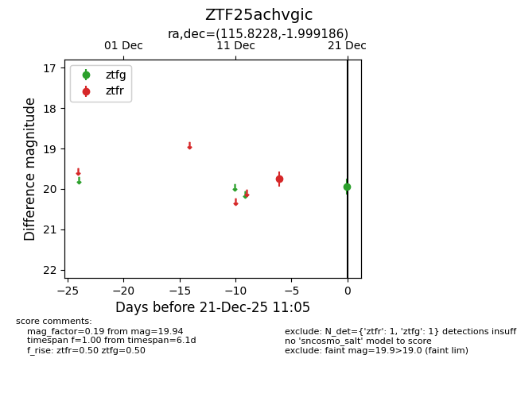
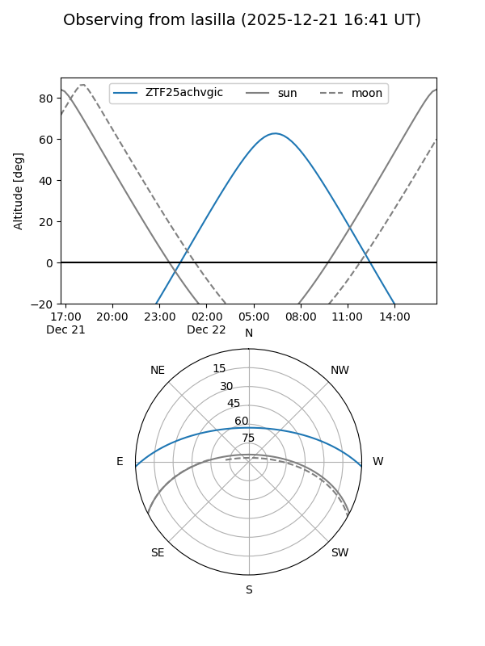
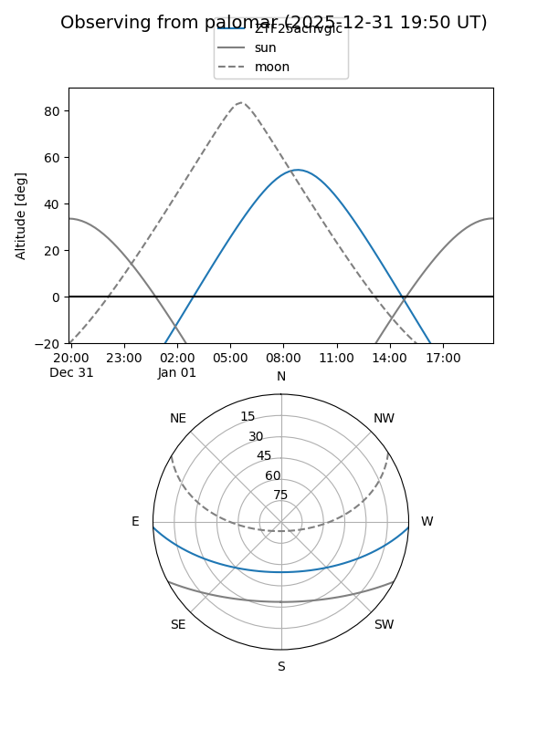

ZTF25achvgic
Target ZTF25achvgic at 2025-12-31 18:00
Aliases and brokers:
FINK: link
Lasair: link
ALeRCE: link
alt names
ZTF25achvgic (ztf,fink_ztf)
Coordinates:
equatorial (ra, dec) = 115.8228,-1.99919
equatorial (HMS+DMS) = 07:43:17.47,-01:59:57.07
galactic (l, b) = (220.7241,+10.58068)
Flags:
Photometry:
last ztfg=19.94, ztfr=19.75
1 ztfg, 1 ztfr detections
Lightcurve

Visibility


Additional plots